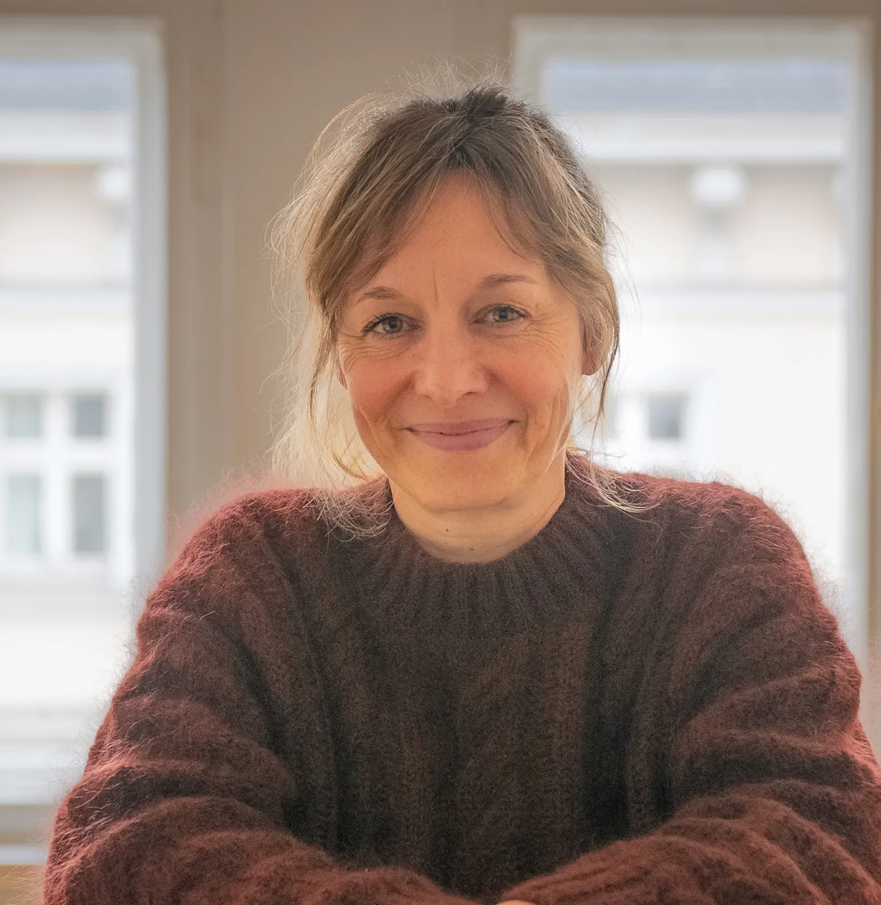

About me
Since 2019, I’ve been supporting individuals, teams, and organizations through change processes as a certified systemic consultant (SG). I’ve expanded my methods through further training in process facilitation, organizational development, and systemic structural constellations.
Before moving into consulting, I spent over two decades managing cultural and event projects across Germany, Europe, Russia, and the UAE. I worked with ministries, institutions, NGOs, and international associations like WorldSkills, the Berlin International Film Festival, and Special Olympics.
What shaped me most were the international projects—where teams were constantly changing and organizational cultures varied widely. That’s where I discovered my deep interest in group dynamics and my commitment to helping people work better together.
“What fascinates me is how can we design complex collaboration so that people feel heard and ideas can flow?”
Today, I bring together my hands-on project experience and systemic methods to support sustainable, human-centred development in teams and organizations.
Certified Systemic Consultant ( Systemische Gesellschaft )
Advanced training in systemic consulting, process facilitation, and organizational development
Training in systemic structural constellations
Master’s degree in Hispanic Philology, Art History, and Economics
Management and consulting of event projects in Germany, Europe, Russia, and the UAE
Collaboration with ministries, institutions, agencies, and associations (e.g.,WorldSkills, Berlin International Film Festival, Special Olympics)

Methods
My approach
Every process is unique. I tailor each session to your needs – whether you’re an individual, a team, or an organization.
My work focuses on transforming communication and behavioral patterns to create clarity, connection, and movement. I integrate a range of systemic methods, including:
Solution- and resource-focused consulting
Systemic structural constellations
Systemic coaching
Team and organizational development
Large-group formats (e.g. Open Space and Future Conference)